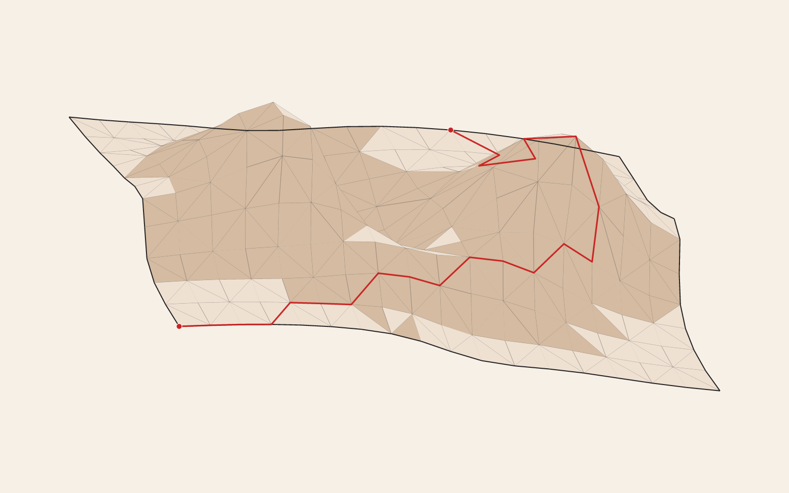
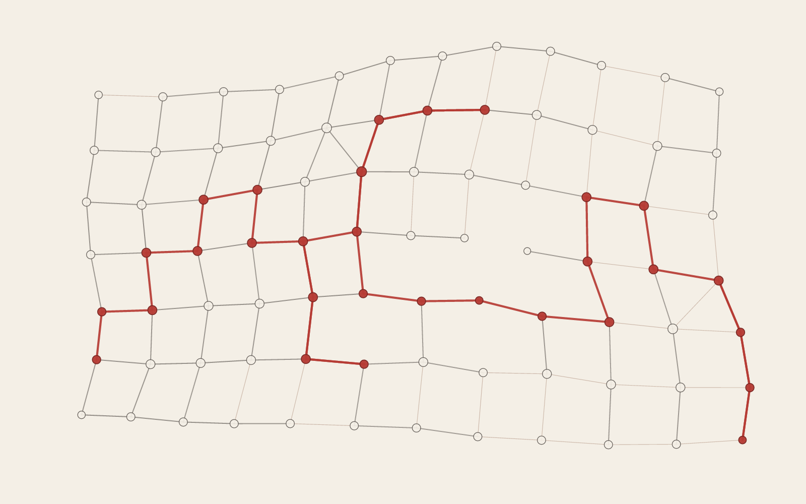
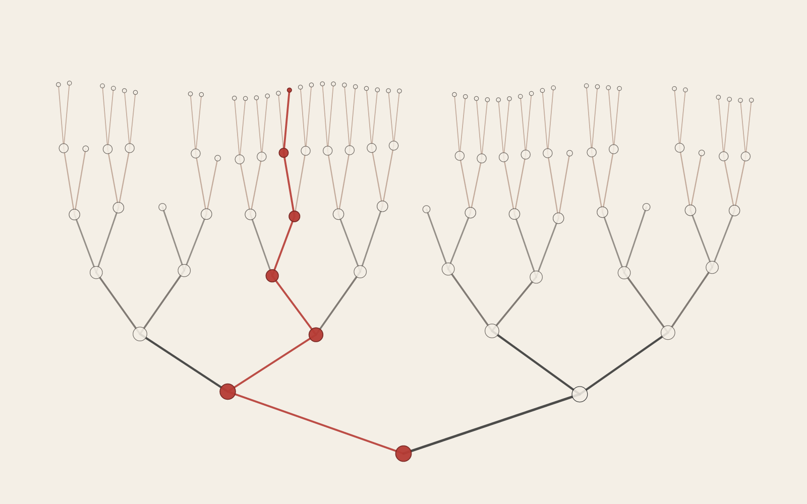
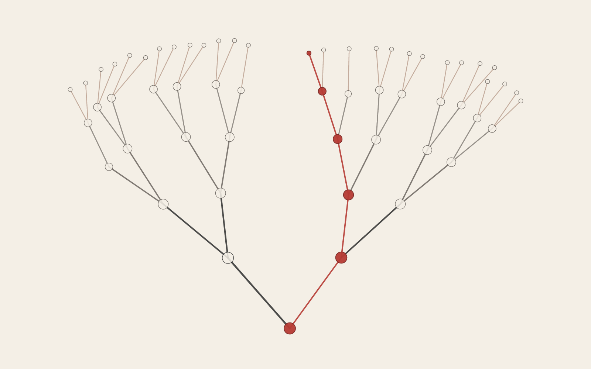
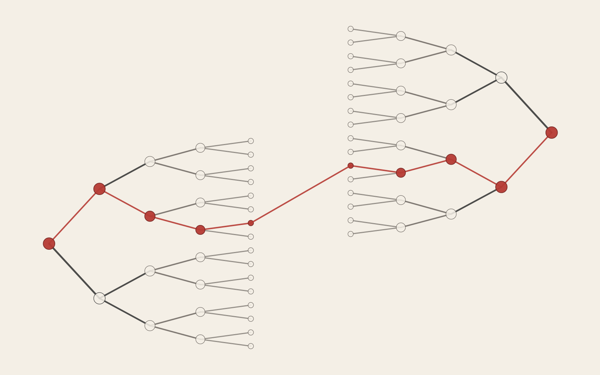
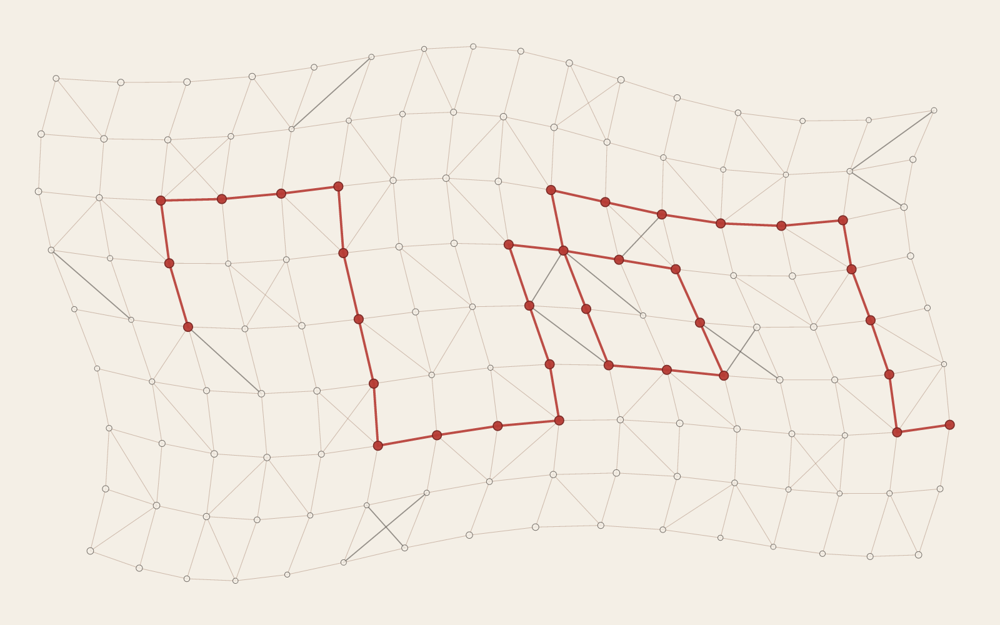
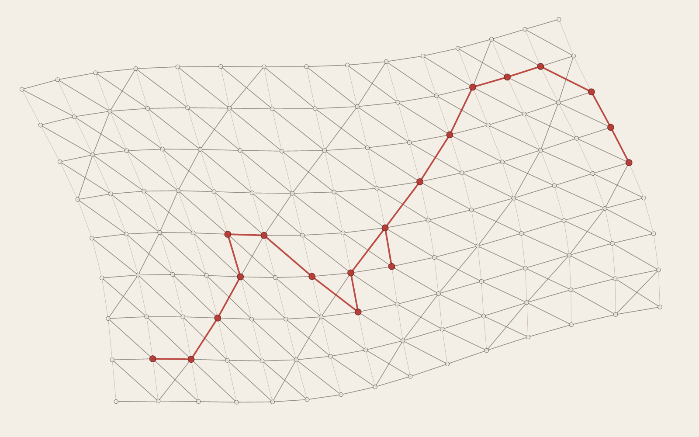
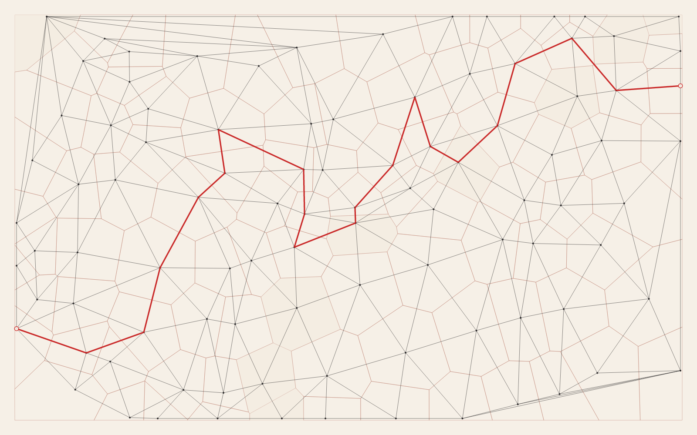
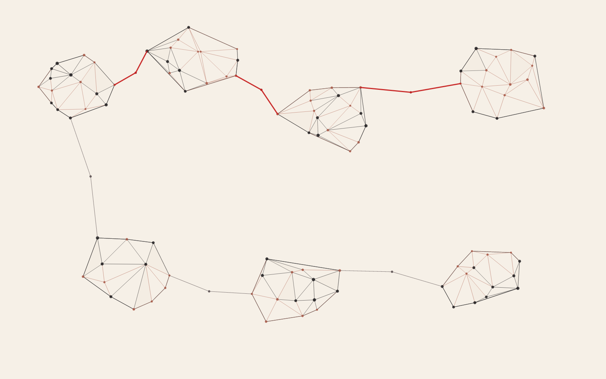

01
Triangulated Terrain Path
A continuous oblique terrain mesh with visible peaks, valleys, and one edge-following path.
9 revised systems built around the qualities that worked in Differential Mesh and Differential Lattice: visible connectivity, discrete geometry, generous negative space, and meaningful state encoded in red.

A continuous oblique terrain mesh with visible peaks, valleys, and one edge-following path.

Relative-neighborhood links adapt to local spacing and resolve into one coherent route.

A depth hierarchy settles under spring attraction and bounded repulsion, with a sparse connected red branch.

A single force-relaxed rooted tree is centered at broad scale, with one non-trivial red route to an interior canopy leaf.

Opposed floor- and ceiling-rooted trees meet through selected facing leaves and one continuous red route.

A smooth deformation field turns a structural grid into a readable map of local strain.

A sheared diagonal structural field exposes strain along intersecting lattice directions.

Clipped cells and their generating graph share one jittered field, with a single red chain crossing the dual reading.

Weighted local meshes become connected islands through deliberately chosen bridges and one restrained red connection.